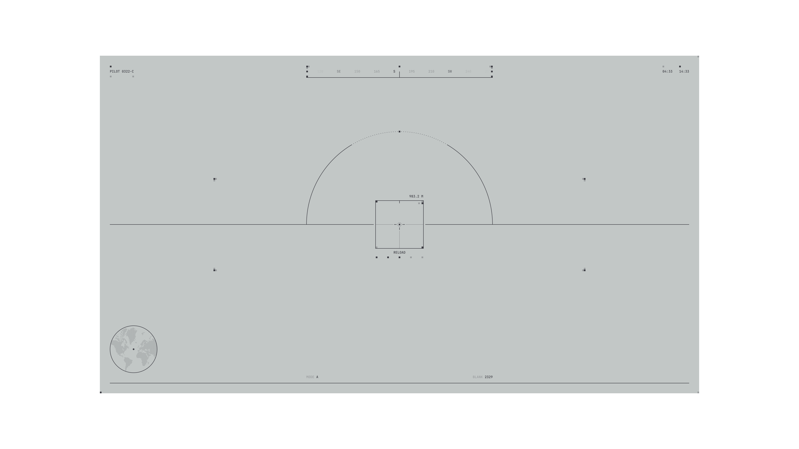
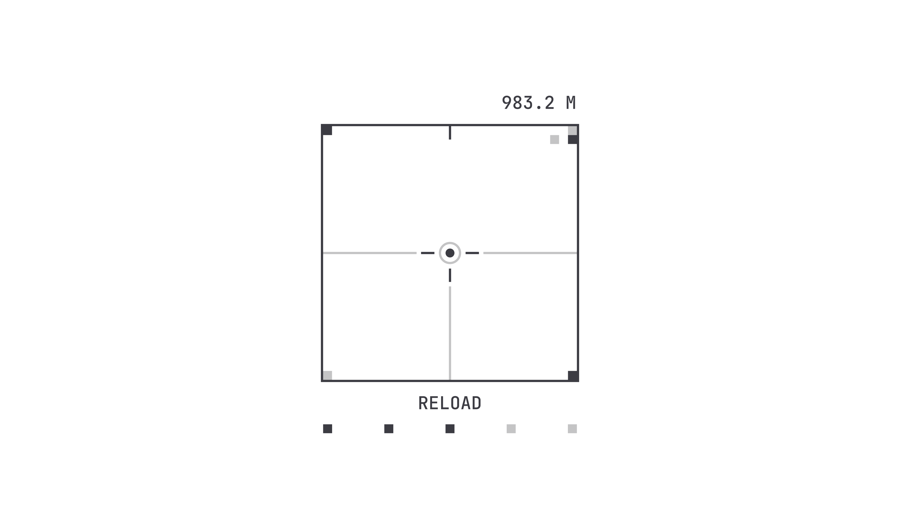
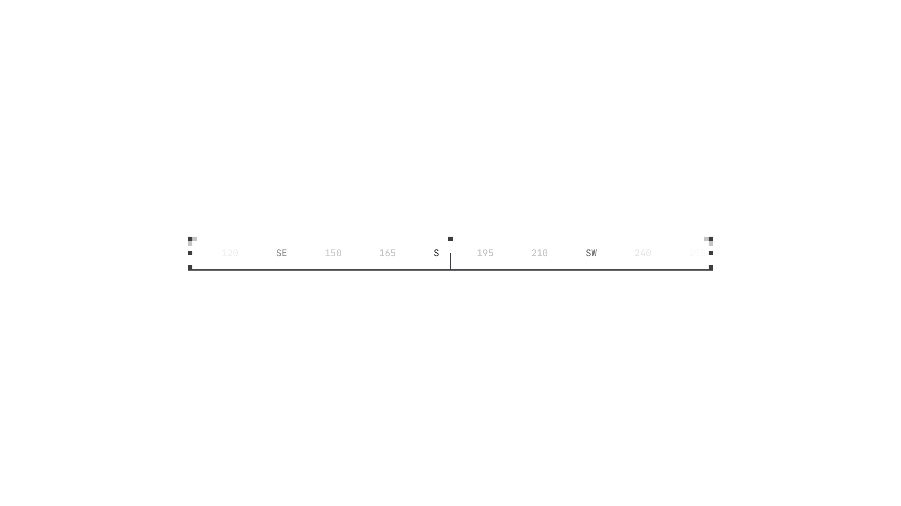

Exploring Fantasy User Interfaces as Visual Systems.
FUI. Dec 25.
An exploration of interface aesthetics where clarity, composition, and signal hierarchy take priority over practical constraints.
A speculative interface study focused on structure, rhythm, and visual logic rather than real functionality. Inspired by the cinematic and technical visual language of Nicolas Lopardo.

Removing Purpose.
This project started when I intentionally removed purpose from the interface. No tasks, no goals, no outcomes. Once usefulness is gone, only structure remains. And structure becomes very visible.
Without responsibility to explain or serve, the interface turns into a visual object. Something you observe rather than use.

Aim design.
Attention Before Action.
I was interested in a specific kind of involvement. The one where you are focused, but not rushed. Where nothing demands a click, yet your attention stays inside the frame.
Hierarchy, spacing, and contrast do all the work here. They guide the eye, slow it down, and invite it to wander. Engagement without instruction.

Compass design.
Floating Presence.
The interface is designed to feel detached from reality. It does not behave like a tool or a dialog. It exists on its own layer.
Almost like an overlay that was never meant to help you, but still feels precise and controlled.
Why This Matters.
Working on FUI helped me sharpen visual judgment. When nothing is functional, every decision becomes about balance, rhythm, and restraint.
Later, this mindset quietly transfers into real products. You start caring more about what the interface communicates before it does anything.
More in Projects.
Developed intuitive digital cockpits integrating real-time data visualization, driver-centric design, and responsive interfaces.
Crafted native-style widgets for car controls, bringing Apple's clarity and consistency into everyday driving.
Engineered an innovative mobile app simplifying restaurant interactions through streamlined ordering and efficient pickup.
Designed a vibrant digital music experience tailored specifically to the dynamic preferences of new generation.
Built a versatile no-code tool empowering designers to rapidly prototype and share UI components and full websites.
Established a minimalist stationery brand that seamlessly blends functional design and engaging digital storytelling.
More in Nuggets.
More in Readings.
A reflection on how Apple Maps uses voice intonation to manage your emotional state while driving, and why Google Maps and Waze don't.
A reflection on finally owning the Pebble 2 Duo, a tiny comeback story about detail, nostalgia, and honest design.
A short manifesto for what Readings is, how I use it, and how to read it.
Copyright Maksim Anisimov.